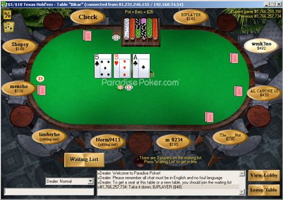

Analysis of FOSS Gaming Failure: A history of PokerSource and Open Source Online Poker
Bradley M. Kuhn
LinuxConf Australia 2020
Monday 13 January 2020
ebb.org/bkuhn/talks/LCA-2020-Games/games-lca-2020.html or FIXME
DISCLAIMER
This talk is only tangentially related to my day job (i.e., the talk is about software freedom!). While I don't think I'll say anything in this talk my employer would strongly object to, my employer probably has no opinion on the online poker industry, other than Conservancy's general opposition to any proprietary software. Nevertheless, the opinions in this talk are entirely my own.
I Don't Know Games
I'm better known for my work on software freedom policy and licensing…
…But, I did a side-gig working on a FOSS game for about 3 years.
This is the story of its failure…
(… and its transient success).
Poker Is Different
How would you define the game of poker?
“Correct” Definition of Poker
Poker is a gambling game of strategy played by people for money, using cards (priority of these things are in that order).
Brief Popularity History of Poker
Poker is very popular in USA, UK, and Australia.
Played regularly in “home games” with friends, but larger games legal in casinos in all those countries and throughout the world.
5 Card Draw games at saloons are part of USAmerican mythology (some of which is based in fact).
Mainstream popular rise, particularly for No-limit Texas Hold'em (NL HE) variant began in 1999 with UK's Late Night Poker television series.
Rise of Online Poker
In 1998/1999, first online poker sites, Planet Poker and Paradise Poker, launch.
Comparatively speaking, poker is straightforward to implement (2-D, minimal graphics needed).
Rise of Online Poker
Watershed moment: Chris Moneymaker (yes, it's his real name from birth. Journalists verified it.)
Moneymaker wins an US$86 entry fee online poker “satellite” to gain entry to the World Series of Poker (WSoP).
Moneymaker ultimately wins the 2003 WSoP Main Event for a prize of US$2.5 million.
Rise of Online Poker
During the Moneymaker era (2003—2011), there are three major online poker “networks”: — Full Tilt Poker, Pokerstars, and Cereus Poker Network (UltimateBet and Absolute Poker)
Plus dozens and dozens of secondary and tertiary networks with “skins”.
Online poker market was estimated in the multi-billions by this time.
FOSS Was Both Early & Late
The history of Free and Open Source Software (FOSS) is riddled with playing “catch-up” to existing proprietary.
Ironically, IRC Poker had been the first “online” poker system (for play money only).
In the early 2000s, no one in FOSS was maintaining its infrastructure.
The One True Hand Evaluator
The first comprehensive poker hand evaluator that ever existed, amazingly, was under the GPL.
Started in 1994 by Cliff Matthews (ctn), it supported every single game.
I don't know for sure, but I suspect every online poker system uses (a fork of) it.
If only network services copyleft (i.e., Affero GPL) had existed in 1994. :)
FOSS Tries to Leapfrog
A French company called Mekensleep attempts to make the ultimate 3-D online poker site (spoiler alert: it failed).
But they hire my lifelong friend, Loïc Dachary as their CTO.
Loïc morally will never write proprietary software, so the entire system is under the Affero GPL and/or GPL.
No One Wants Poker to Look Like a Video Game
Poker, in essence, is gambling.
The goal is to maximize hands per hour (MORE GAMBLING).
No one plays just one table (usually at least 2-3).
The player-preferred UI, thus, has barely changed since 1998.
FOSS's Opportunity Lost
Online cheating and government raids became a plague for poker.
Cereus (UB & Absolute) founders actually wrote a “god mode” to cheat customers.
Full Tilt mismanaged funds (comingled player balances with operating expenses) and played a shell game.
Transparency of FOSS could have helped here.
The Harder Software
Focus on making only the game work meant that infrastructural software for site management wasn't written:
- Cashier services
- Player database management and marketing
- Collusion detection
Even though Pokersource was a “complete system” — fast, efficient and scalable server, two clients, including the first Javascript client in online poker history — you couldn't launch a online poker business with it. Then …
Repurpose to Play Money
Lo&ium;c built a consulting business, called OutFlop, around the existing code.
Primary client was a French social media site who deployed play money version for prizes.
We were a network of contractors, and Lo&ium;c shielded each contractor from deployment — doling out small tasks (2—10 days work) and paying by project.
Was this Success?
For approximately three years, about 10 contractors had paying, part-time jobs improving a 100% FOSS game codebase.
Should we really define FOSS success as a project that lasts a generation (like Linux)?
Why FOSS Online Poker Is Likely Hopeless
October 13, 2006: USA's Unlawful Internet Gaming Act
USA DoJ warns all poker sites to cease USA operation immediately; PartyPoker is the only one that does.
April 15, 2011: All poker sites still operating in the USA are shut down.
Full Tilt's pyramid scheme is revealed within weeks.
Why FOSS Online Poker Is Likely Hopeless
Pokerstars quickly makes a deal with USA DoJ to pay a fine and acquire FullTilt's player debt.
Pokerstars now holds a strong majority in the market; other players are long-standing stalwarts.
More importantly, the investment in operational software would be prohibitive for a FOSS competitor.
Is There a Future in Play Money?
The FOSS code is there (even with full test coverage on poker-network, thanks to me :) to deploy play-money poker.
Why isn't anyone using it?
Zynga, as it turns out, dominated the play-money market because they were early on Facebook.
Would there be value in play-money Mastadon Poker as a social media add-on?
Is There a Future in Play Money?
Fact is, people who love poker enough to deploy a FOSS play-money site think play money poker is not even a game worth playing.
More Info / Talk License

URLs / Social Networking / Email:
- Disclaimer: this talk is my opinions, not necessarily my employer's.
- Pls. support Conservancy
- Conservancy: sfconservancy.org & @conservancy.
Presentation and slides are: Copyright © 2020 Bradley M. Kuhn, and are licensed under the Creative Commons Attribution-Share Alike 4.0 International License. Slide Source available.
Some images included herein are ©’ed by others. I believe my use of those images is fair use under USA © law. However, I suggest you remove such images if you redistribute these slides under CC-By-SA 4.0.